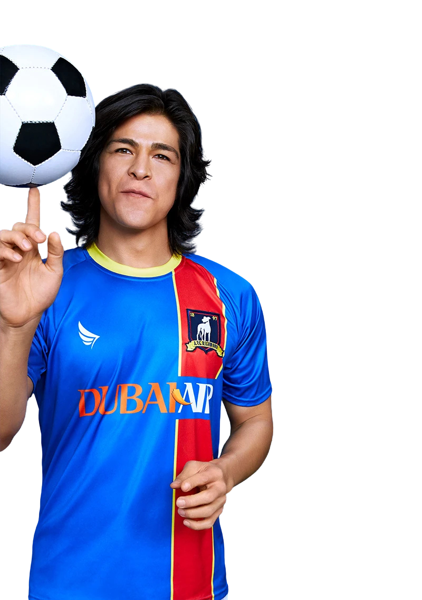

14
← Back to squad
DaniRojas
- Position
- Forward
- Squad number
- 14
- Nationality
- Mexican
Dani Rojas is a dynamic Mexican forward whose energy and enthusiasm quickly made him one of AFC Richmond's most popular players. Technically gifted and naturally attacking, Rojas combines movement, finishing and creativity in the final third.
After arriving at Richmond, Dani immediately demonstrated his quality in training and established himself as an important attacking option for the Greyhounds.
His infectious enthusiasm and love of the game are central to his personality. Dani is famous around the club for his simple philosophy: "Football is life."